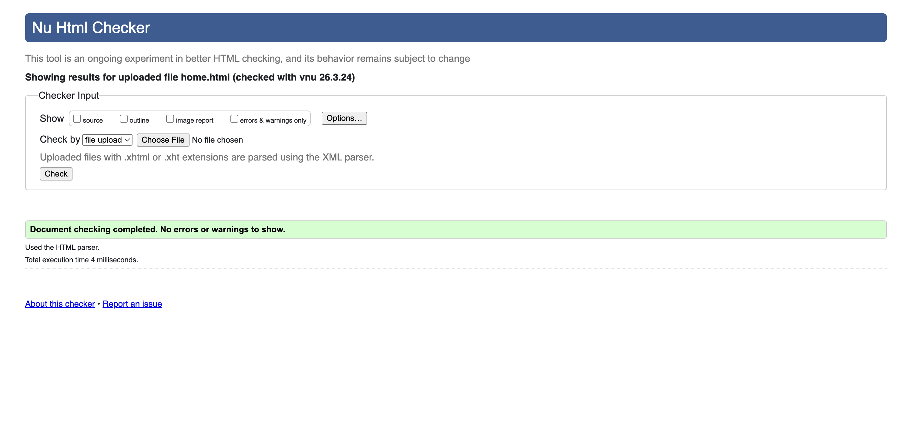
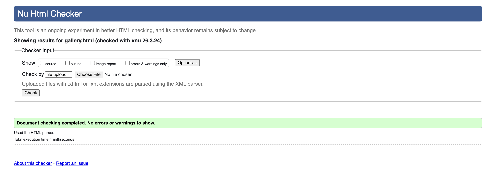
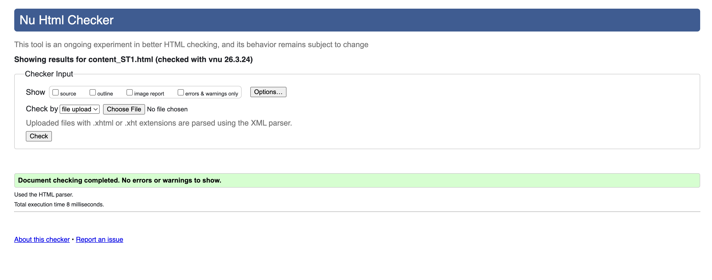

Home Page validation report
The Home page successfully passed the W3C HTML5 validator. One warning regarding the use of an empty "section" was resolved by adding a descriptive "h2" for better semantic structure

Back to Page Editor page
Gallery Page validation report
The Gallery page code is valid. I ensured that all data- attributes used for the lightbox modal follow HTML5 naming conventions, which prevented any validation errors

Back to Page Editor page
Content Page validation report
My research page (content_ST1.html) is fully compliant. I verified that the nested "table" and fragment identifier links (#section) do not produce any syntax errors
